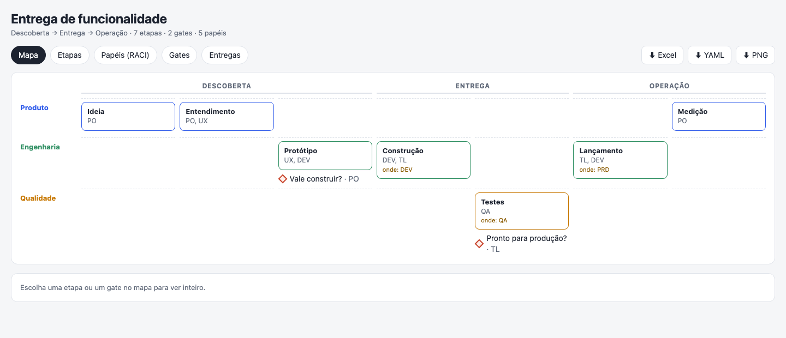
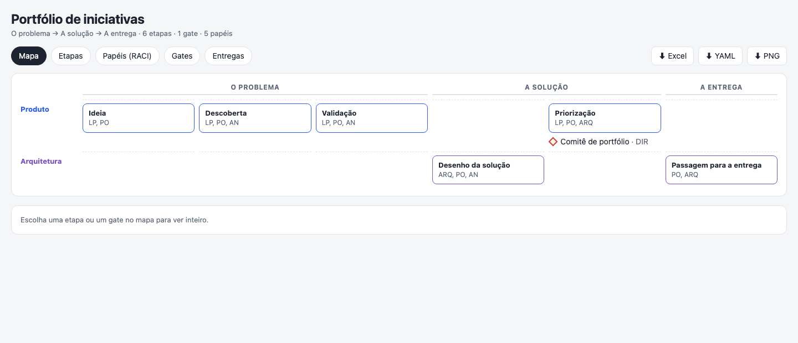
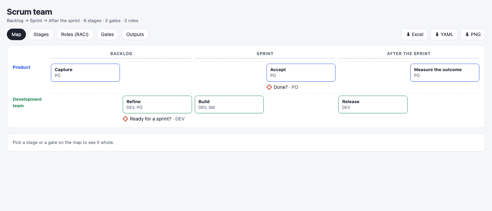
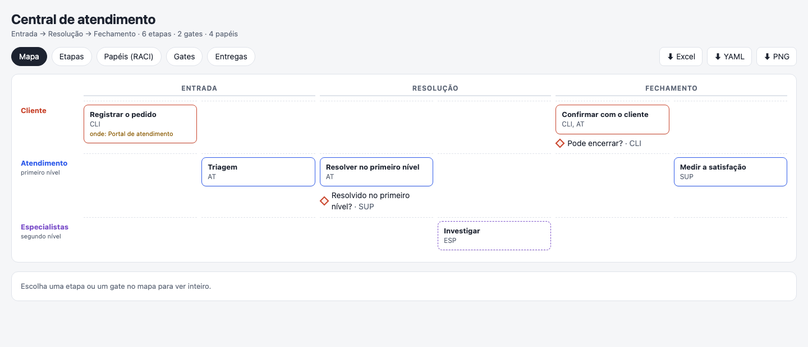

stage-door
Give Claude your team's process — the PDF, the slides, what everyone just knows — and get one clear way of working: the stages, the gates and who approves them, the roles and what each step delivers. Checked, not invented.

Four files from one
<id>.way.yamlThe source: plain text you keep in Git. Every other file is made from it.The map (.html)One page that opens offline: click a stage or a gate, see roles (RACI), gates and outputs, download a PNG.
The workbook (.xlsx)Summary, Stages, Gates, Roles (RACI), Outputs, KPIs and a checklist for the gate meeting. Edit it and Claude proposes the changes back.
The lesson (.html)The flow drawn stroke by stroke, a chapter per phase — made with chalk-talk.
Examples — open a map, play a lesson, download the workbook

Portfólio de iniciativas An initiative portfolio: from an idea to a committee decision, each stage receiving what the one before delivers — the thread, in the Stages tab. MapLessonWorkbook (.xlsx)File (.way.yaml)
Scrum team A Scrum team: a backlog item refined, built in a sprint and accepted, with Definition of Ready and Done as gates. MapLessonWorkbook (.xlsx)File (.way.yaml)
Central de atendimento A service desk: a ticket triaged, solved at first level or escalated, and closed only when the customer confirms. MapLessonWorkbook (.xlsx)File (.way.yaml)